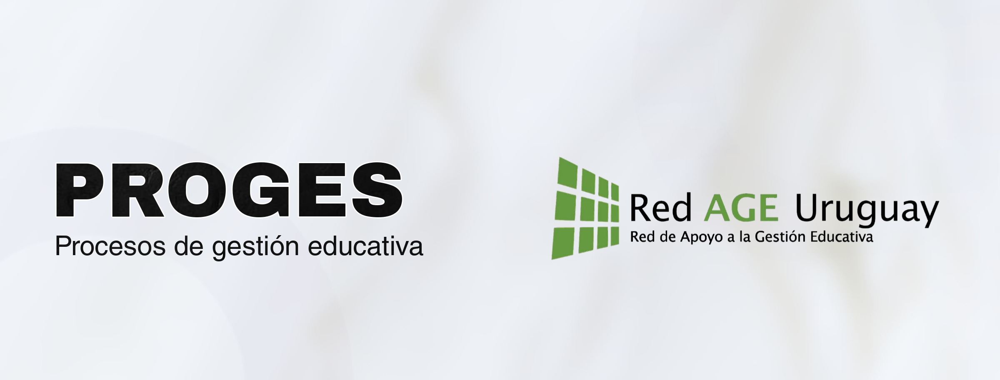

Esta revista es el acceso abierto, sin requerimientos de registro, suscripción o pago —es decir, sin restricciones— a material digital educativo, académico o científico, asociados con temas de gestión educativa; principalmente artículos de investigación científica arbitrados mediante el sistema de revisión por pares (o peer review).
Los especialistas que revisarán el original evaluarán cada artículo basándose en los siguientes criterios:
Por más informaciones dirigirse a revistagestionredage@gmail.com
© PROGES – Red de Apoyo a la Gestión Educativa (RedAGE)